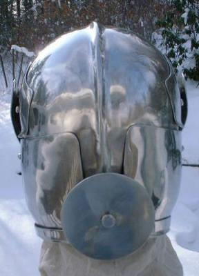
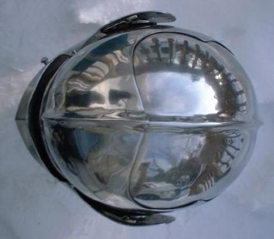

Milanese Style Armet (c. 1500)




Milanese Style Armet (c. 1500):
The helm made from 304 Stainless
Steel. Most of the helm is 14 ga., the brow reinforcement is 16 ga. and
the rondel is 12 ga.. The weight is about 12 lb.. Also has a bar grill
visor. Has dual spring pins to keep visor closed.
I originally made the armet for myself. My head
is 23 inches around at forehead level and from the top of my head to my
shoulders is 10 inches. The helm fit me with room for 1/2" of padding.
I use about 1" of padding around the neck so that when the helm is closed
it can not come off my head or even start to.
It is closely modeled
after an Italian Armet in the Wallace collection. (see: Arms & Armour
of the Medieval Knight by David Edge & John Miles Paddock page
105)
(1st) Finished Aug. 1998
(2nd) Finished Sept. 1998 (shown)
(3rd) Finished Nov. 1998
I would build this helm in the following order:
1) Cut out the plates.
2) Finish the plate edges and corners.
3) Role the edges on the side plates that form the opening
for the face.
4) Dish and shape the top halves.
5) Weld the top halves together.
6) Shape the tail plate and weld it onto the back the helm's
top.
7) Grind welds flush on the outside and cleanup weld on
the inside if needed.
8) Shape the two halves of the brow reinforcement plate
so that they fit flush on the helm's top.
9) Weld the two halves of the brow reinforcement plate
together.
10) Grind the weld flush on the outside and cleanup weld on the inside
if needed.
11) Cut out the slots that the hinges will fit into.
12) Put a medium (around a 220 grit) finish on the helm top and brow
reinforcement.
13) Fit the brow reinforcement plate on the helm top and draw an outline
of it with wax pencil or marker on the helm top.
14) Drill or Punch 1/4" holes 1.5" apart in the area that
will be covered by the brow reinforcement. The first row of holes
should be 1/2" in from the outline.
15) Clamp the brow reinforcement to the helm top. Be very sure
it's clamped on where you want it and is on straight. I use 2 pairs of
vise grips with 12" throats and 2 pairs of vise grips with 4" throats.
16) Clamp down the center near the bottom first and weld in the first
2 holes on each side of the ridge (center line of the brow) near the bottom.
17) Weld the holes in moving up along the ridge (moving the clamps
as you go along).
18) Now weld in the rest of the holes moving out towards the two ends
of brow reinforcement plate (moving the clamps as you go along).
19) Shape the side plates and fit them to the helm.
20) Build the hinges for the side plates.
21) Rivet the hinges onto the helm top in the slots you cut out of
them. Then rivet the side plates onto the other side of the hinges.
22) Do the final shaping where the side plates overlap over the chin.
23) Drill/punch a 5/16" holes over the chin (through both plates) for
the 5/16" pin/peg that hold the side plates closed.
24) Weld a 5/16" rivet into the hole in the side plate that fits under
the other one. The Rivet head is on the inside with the shaft going though
the hole in the first side plate (and the hole in the second side plate
when the helm is closed).
25) Shape the plates for the sparrows beak visor and fit them together.
26) Weld the plates for the sparrows beak visor together.
27) Grind welds flush on the outside and cleanup welds on the inside
if needed.
28) Put a medium (around a 220 grit) finish on the sparrows beak visor.
29) Build the two hinges for the two visors. You will need two sets
of one of the sides of the hinges. The cross section of the hinge should
look like this:
/
O
/
30) Fit the visor to the helm and mark where you want the two pivot
points.
31) Drill/Punch 1/4" holes for the two pivots.
32) Drill/Punch 1/4" holes in the side the hinges that you only made
one of of each hinge.
33) Use 1/4" rivets to attach the two hinges to the pivot points. Be
careful not to over tighten the rivets they will be pivoting on.
34) Fit the visor to the helm and mark where the other half of the
hinges will be attached to the inside of the wings on the sides of visor.
35) Pull the pins out of the two hinges for the visor and rivet the
unattached halves of the hinges to the visor where you marked. To attach
the visor afterwards line up the two halves of the hinges on both sides
and put the pins back in.
36) Shape the two plates for the bar grill visor and fit them to the
helm.
37) Weld the two plates together for the bar grill visor.
38) Grind welds flush on the outside and cleanup welds on the inside
if needed.
39) Drill/Punch the holes for the bars to pass through. The bars should
pass through the holes and be welded to the sheet metal on the inside.
40) Fit the visor to the helm again and adjust as needed.
41) Shape the bars and weld them in place.
42) Clean up the welds on the bar grill as needed.
43) Fit the visor to the helm and mark where the other half of the
hinges will be attached to the inside of the wings on the sides of visor.
44) Rivet the halves of the hinges to the visor where you marked. To
attach the visor afterwards line up the two halves of the hinges on both
sides and put the pins back in.
45) Drill/Punch a 3/8" hole in the tail plate on the back of the helm
where you want to attach the post and rondel.
(46-53 This is how I make the post and rondel)
46) Grind and/or sand the head of a 3/8" partly threaded hex bolt so
that it is a semi round head. The part of the shaft of the bolt that is
seen on the outside of the helm should be unthreaded.
47) Cut a 3" diameter disc out and finish the edge.
48) Drill/Punch a 3/8" hole in the middle of the disc.
49) Put the bolt through the hole in the disc so that the disc is against
the head of the bolt and weld the disc onto the shaft of the bolt.
50) Weld a washer onto the bolt just above where the threading ends.
51) Clean up the welds on the post and rondel (bolt and disc) as needed.
52) Put the threaded end of the bolt through the hole on the
tail on the helm and use a nut to attach it.
53) Be sure to cut off any excess on the bolt shaft that
extends pass the nut. Finish the end of the bolt so that it isn't sharp.
If you plan on using the helm with the post and rondel you will want
to get or make a low profile nut so it does hit you in the back of the
neck.
54) Polish the helm.
55) Put each visor on the helm and mark a line on the top of the helm
where the top edge of the sides of the visor are on each side. If one visor
comes up higher on the sides then the other you will need to cut and/or
grind it down until they both line up the same.
56) Drill holes for spring pins on each side of the opening of the
face where the lines for the top edge of the visor are.
57) Attach spring pins and adjust the holes for the pins as needed.
58) Attach the metal mounting strips for a camail along the bottom
edge of the side plates. If you want to mount a camail then a leather mounting
strip that the mail is attached to gets sandwiched between the bottom of
the side plates and the metal mounting strip. The metal mounting strip
acts as a big washer to hold on the leather strip.
Copyright 1999 Craig W. Nadler All rights reserved